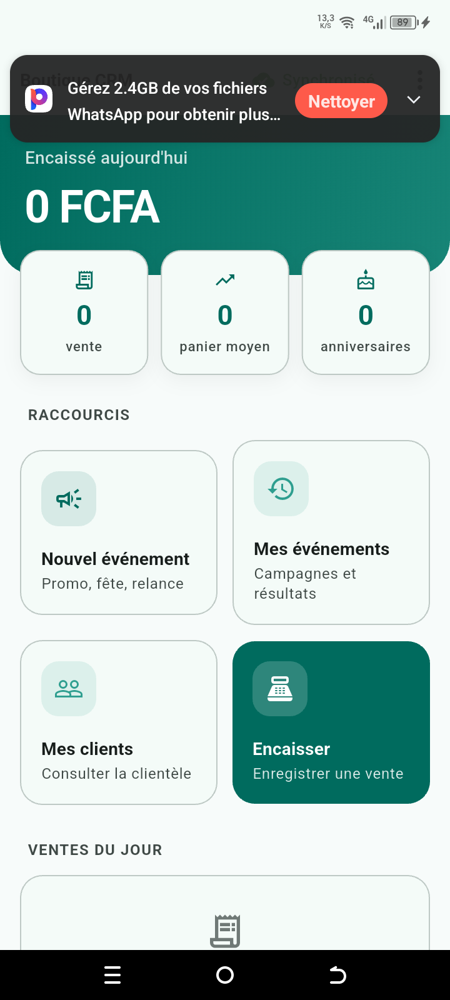

Projets
🏪 Boutique CRM
Plateforme de fidélisation clientèle pour commerces de détail
Un commerçant encaisse ses ventes sur son téléphone, constitue son fichier clients au fil des passages, et relance par SMS ceux qui s'éloignent.
Toute l'application fonctionne sans connexion. Dans une boutique de Douala, le réseau va et vient : une caisse qui afficherait « pas de connexion » au moment d'encaisser serait abandonnée en une semaine. Les données sont écrites en SQLite locale, la synchronisation rattrape le retard quand le réseau revient.
Segmentation RFM automatique, détection de doublons, recherche tolérante aux fautes de frappe, gestion des rôles vendeur/gérant, traçabilité des encaissements.



🤝 Mutuelle — module Odoo 17
Gestion d'une mutuelle d'entreprise
Un module métier complet pour une mutuelle : adhérents et ayants droit, cotisations, prêts avec échéanciers et remboursements, caisse et opérations, aides sociales.
La mécanique financière est automatisée. Des tâches planifiées appliquent chaque mois les déductions de prêt sur les cotisations et recalculent les retards, sans intervention manuelle. Cinq rapports imprimables couvrent le journal de caisse, les états par période, les cotisations et les prêts.
🏦 Microfinance — modules Odoo
Gestion de crédits et d'épargne — contribution
Modules de microfinance couvrant le cycle du crédit : ouverture de compte, versements et retraits, sessions de caisse journalières, demandes de crédit avec validation à plusieurs niveaux, garanties, échéanciers, remboursements et pénalités.
Reçus, relevés de compte et états financiers journaliers, avec une sécurité par rôles et la traçabilité des opérations.
🚕 Sécurité Taxi Cameroun
Sécurité des transports en commun
Un passager scanne le code QR collé dans un taxi et sait, avant de monter, qui conduit et si ses papiers ont été contrôlés — et par quelle autorité.
Une fois à bord, il partage son trajet avec un proche et peut déclencher une alerte d'un seul appui.
🎓 LinguaCampus
Gestion d'un institut de langues
Le cycle de vie complet d'un apprenant — de l'inscription à la délivrance d'une attestation — avec le planning des cours, la facturation et le suivi pédagogique.
Compétences
Back-end
NestJS, Django, Node.js, Django REST Framework, PostgreSQL, conception de schémas
Odoo — socle solide
Développement de modules métier sur Odoo 15 et 17 : modèles et héritage, champs calculés, contraintes et onchange, vues et assistants, rapports QWeb imprimables, tâches planifiées, sécurité par groupes et règles d'accès.
Mobile
Flutter, Dart, SQLite, architectures hors ligne, synchronisation différée
Front-end
React, Next.js, TypeScript, interfaces adaptatives
Outils
Docker, Git, Linux, déploiement sur serveur
Comment je travaille
Contact
Ouverte aux opportunités de stage, d'alternance et de collaboration — développement web, mobile et Odoo.
L'adresse s'affiche au clic — elle n'apparaît pas en clair dans la page, pour éviter sa collecte automatique.